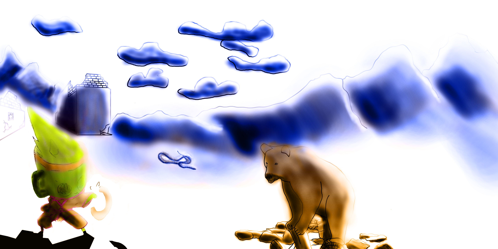

Ángel Julián Castillo
Ángel Julián Castillo es un autor de este portfolio donde aparecen algunos de los trabajos realizados para la asignatura de Expresión Artistica. La imagen que aparece arriba es la composicion que realice para el examen de Expresión Artistica